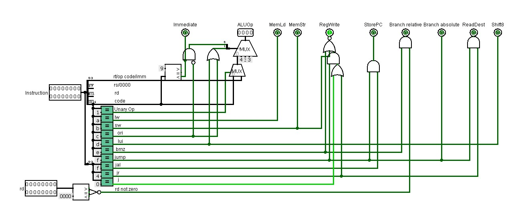

Project 6: Full Datapath
Control Unit
Om het datapath overzichtelijk te maken voegden we enkele custom units toe. De eerste unit is de control unit. Deze krijgt een instructie en de waarde uit het rd register en geeft verschillende handige outputs. De outputs dienen als een soort van switches om bepaalde waarden aan of uit te zetten en zijn makkelijk te gebruiken door hun naam. Er is enkel een immediate als de eerste vier bits groter zijn dan 9. De ALU operatie zijn bits 0-3 als het een Unary operation is en bits 12-15 als het een binary operation is. De code wordt OR of SLL indien de instructie ori of lui is.
Immediate
De tweede unit is de Immediate unit. Het berekent de immediate waarde aan de hand van een instructie. De immediate waarde zit namelijk niet in elke instructie op dezelfde plek.
Address Unit
De address unit is geen echte unit die we moesten implementeren. We hebben deze toch toegevoegd omdat het net zoals de control unit de logica behandeld op basis van een instructie. Het zorgt ervoor dat de juiste addressen aan de register file gegeven worden.

Full Datapath
Nu we alle units gemaakt hebben is het tijd om ze bij elkaar te voegen. We verbinden de instructie met de control unit, de address unit en de immediate. Ook de program counter heeft een upgrade gekregen tegenover het simple datapath. De branch relative en branch absolute input komen van de control unit. Het target adres is niet langer een constante 0, maar komt nu van multiplexer die een waarde doorlaat op basis van de soort jump instructie.